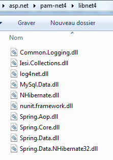
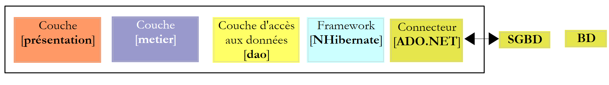
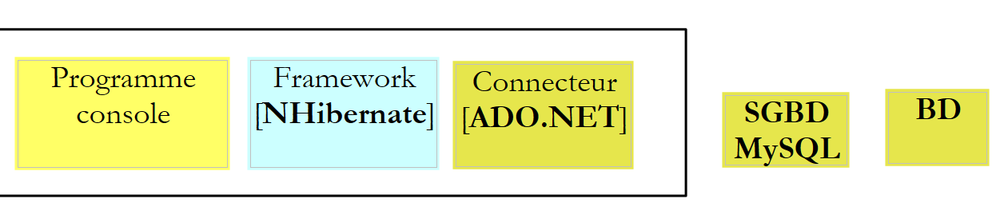
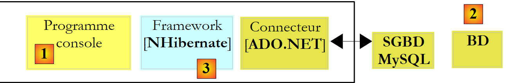
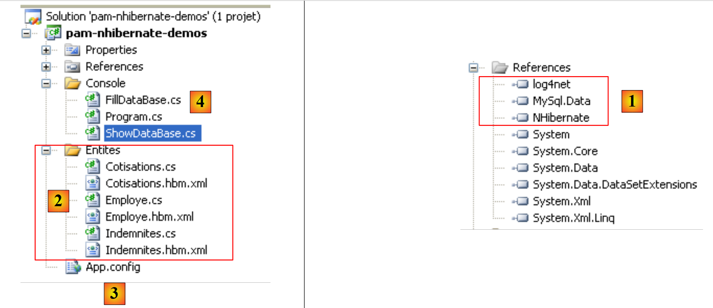

6. Introdução ao ORM NHibernate
Este capítulo é uma introdução sucinta ao NHibernate, o equivalente em .NET do framework Java Hibernate. Para uma introdução completa, pode-se ler:
Título: NHibernate in Action, Autor: Pierre-Henri Kuaté, Editora: Manning, ISBN-13: 978-1932394924
Um ORM (Mapeador Objeto-Relacional) é um conjunto de bibliotecas que permite a um programa que utiliza uma base de dados aceder à mesma sem emitir comandos SQL explícitos e sem conhecer as particularidades do SGBD utilizado.
Pré-requisitos
Numa estrutura [débutant-intermédiaire-avancé], este documento encontra-se na secção [intermédiaire]. A sua compreensão requer vários pré-requisitos que podem ser encontrados em alguns dos documentos que escrevi:
- Linguagem C# 2008: [Apprentissage du langage C# Version 3.0 avec le Framework .NET 3.5 ]
- [Spring IoC], disponível em URL e [Spring IoC pour .NET ]. Apresenta os conceitos básicos da inversão de controlo (Inversion of Control) ou injeção de dependências (Dependency Injection) do framework Spring.Net [Spring.NET | Homepage ].
Por vezes, são apresentadas sugestões de leitura no início dos parágrafos deste documento. Estas remetem para documentos anteriores.
Ferramentas
As ferramentas utilizadas neste estudo de caso estão disponíveis gratuitamente na Internet. São as seguintes (dezembro de 2011):
- Nhibernate 3.2, disponível no URL [http://nhforge.org/Default.aspx]
- Spring.net 1.3.2 disponível no URL [http://www.springframework.net]. O framework Spring.net é muito completo. Aqui, utilizaremos apenas a biblioteca que ele fornece para facilitar a utilização do framework Nhibernate.
- O Log4net 1.2.10 está disponível na URL [http://logging.apache.org/log4net]. Este framework de registo é utilizado pelo Nhibernate.
- O Nunit 2.5 está disponível na URL [http://www.nunit.org/]. Este framework de testes unitários é o equivalente, para .NET, ao framework JUnit para a plataforma Java.
- O controlador ADO.NET 6.4.4 do SGBD MySQL 5 está disponível na URL [http://dev.mysql.com/downloads/connector/net]
Todos os ficheiros DLL necessários para os projetos do Visual Studio 2010 foram reunidos numa pasta [libnet4]:
 |
6.1. O papel do NHIBERNATE numa arquitetura em camadas .NET
Uma aplicação .NET que utilize uma base de dados pode ser arquitetada em camadas da seguinte forma:
 |
A camada [dao] comunica com o SGBD através do API e do ADO.NET (ver parágrafo 3.3).Na arquitetura anterior, o conector [ADO.NET] está ligado ao SGBD. Assim, a classe que implementa a interface [IDbConnection] é:
- a classe [MySQLConnection] para o SGBD MySQL
- a classe [SQLConnection] para o SGBD e o SQLServer
A camada [dao] depende, assim, do SGBD utilizado. Alguns frameworks (Linq, Ibatis.net, NHibernate) eliminam esta restrição ao adicionarem uma camada adicional entre a camada [dao] e o conector [ADO.NET] do SGBD utilizado. Iremos utilizar aqui o framework [NHibernate].
 |
Na figura acima, a camada [dao] já não se dirige ao conector [ADO.NET], mas sim ao framework NHibernate, que lhe apresentará uma interface independente do conector [ADO.NET] utilizado. Esta arquitetura permite alterar o SGBD sem alterar a camada [dao]. Nesse caso, apenas o conector [ADO.NET] deve ser alterado.
6.2. A base de dados de exemplo
Para demonstrar como trabalhar com o NHibernate, utilizaremos a seguinte base de dados MySQL [dbpam_nhibernate], descrita no parágrafo 3.1. A exportação da estrutura da base de dados para um ficheiro SQL produz o seguinte resultado:
Note-se, nas linhas 6, 20 e 36, que as chaves primárias ID têm o atributo autoincrement. Isto significa que o MySQL irá gerar automaticamente os valores das chaves primárias sempre que for adicionado um registo. O programador não precisa de se preocupar com isso.
6.3. O projeto de demonstração em C#
Para apresentar a configuração e a utilização do NHibernate, utilizaremos a seguinte arquitetura:
 |
Um programa de consola [1] irá manipular os dados da base de dados anterior [2] através do framework [NHibernate] [3]. Isto levar-nos-á a apresentar:
- os ficheiros de configuração do NHibernate
- o API do NHibernate
O projeto em C# será o seguinte:
 |
Os elementos necessários para o projeto são os seguintes:
- no [1], os DLL de que o projeto necessita:
- [NHibernate]: o DLL do framework NHibernate
- [MySql.Data]: o DLL do conector ADO.NET do SGBD MySQL
- [log4net]: o DLL do framework Log4net que permite gerar registos
- em [2], as classes de imagens das tabelas da base de dados
- em [3], o ficheiro [App.config] que configura toda a aplicação, incluindo o framework [NHibernate]
- em [4], e as aplicações de consola de teste
6.3.1. Configuração da ligação à base de dados
Voltemos à arquitetura de teste:
 |
Como se pode ver acima, o [NHibernate] tem de poder aceder à base de dados. Para tal, necessita de algumas informações:
- o SGBD que gere a base de dados (MySQL, SQLServer, Postgres, Oracle, ...). A maioria dos SGBD adicionou à linguagem SQL extensões próprias. Conhecendo o SGBD, o NHibernate pode adaptar os comandos SQL que emite a esse SGBD. O NHibernate utiliza o conceito de dialeto do SQL.
- os parâmetros de ligação à base de dados (nome da base de dados, nome do utilizador titular da ligação, a sua palavra-passe)
Estas informações podem ser colocadas no ficheiro de configuração [App.config]. Eis o ficheiro que será utilizado com uma base de dados MySQL 5:
<?xml version="1.0" encoding="utf-8" ?>
<configuration>
<!-- secções de configuração -->
<configSections>
<section name="log4net" type="log4net.Config.Log4NetConfigurationSectionHandler,log4net" />
<section name="hibernate-configuration" type="NHibernate.Cfg.ConfigurationSectionHandler, NHibernate" />
</configSections>
<!-- configuração NHibernate -->
<hibernate-configuration xmlns="urn:nhibernate-configuration-2.2">
<session-factory>
<property name="connection.provider">NHibernate.Connection.DriverConnectionProvider</property>
<!--
<property name="connection.driver_class">NHibernate.Driver.MySqlDataDriver</property>
-->
<property name="dialect">NHibernate.Dialect.MySQL5Dialect</property>
<property name="connection.connection_string">
Server=localhost;Database=dbpam_nhibernate;Uid=root;Pwd=;
</property>
<property name="show_sql">false</property>
<mapping assembly="pam-nhibernate-demos"/>
</session-factory>
</hibernate-configuration>
<!-- Esta secção contém as definições de configuração do log4net -->
<!-- NOTE IMPORTANTE: os registos não estão ativos por predefinição. É necessário ativá-los programaticamente com a instrução log4net.Config.XmlConfigurator.Configure();
! -->
<log4net>
<!-- Definir um appender de saída (para onde os registos serão enviados) -->
<appender name="LogFileAppender" type="log4net.Appender.FileAppender, log4net">
<param name="File" value="log.txt" />
<param name="AppendToFile" value="false" />
<layout type="log4net.Layout.PatternLayout, log4net">
<param name="ConversionPattern" value="%d [%t] %-5p %c [%x] <%X{auth}> - %m%n" />
</layout>
</appender>
<appender name="LogDebugAppender" type="log4net.Appender.DebugAppender, log4net">
<layout type="log4net.Layout.PatternLayout, log4net">
<param name="ConversionPattern" value="%d [%t] %-5p %c [%x] <%X{auth}> - %m%n"/>
</layout>
</appender>
<appender name="ConsoleAppender" type="log4net.Appender.ConsoleAppender, log4net">
<layout type="log4net.Layout.PatternLayout, log4net">
<param name="ConversionPattern" value="%d [%t] %-5p %c [%x] <%X{auth}> - %m%n"/>
</layout>
</appender>
<!-- Configurar a categoria raiz, definir o nível de prioridade predefinido e adicionar o(s) appender(s) (para onde os registos serão enviados) -->
<root>
<priority value="INFO" />
<!--
<appender-ref ref="LogFileAppender" />
<appender-ref ref="LogDebugAppender"/>
-->
<appender-ref ref="ConsoleAppender"/>
</root>
<!-- Especificar o nível para alguns namespaces específicos -->
<!-- O nível pode ser: ALL, DEBUG, INFO, WARN, ERROR, FATAL, OFF -->
<logger name="NHibernate">
<level value="INFO" />
</logger>
</log4net>
</configuration>
- linhas 4-7: definem secções de configuração no ficheiro [App.config]. Consideremos a linha 6:
<section name="hibernate-configuration" type="NHibernate.Cfg.ConfigurationSectionHandler, NHibernate" />
Esta linha define a secção de configuração de NHibernate no ficheiro [App.config]. Possui dois atributos: name e type.
- O atributo [name] designa a secção de configuração. Esta secção deve ser delimitada pelas balizas <name>...</name>, neste caso <hibernate-configuration>...</hibernate-configuration>, nas linhas 11 a 24.
- O atributo [type=classe,DLL] indica o nome da classe responsável por processar a secção definida pelo atributo [name], bem como a DLL que contém essa classe. Neste caso, a classe chama-se [NHibernate.Cfg.ConfigurationSectionHandler] e encontra-se na DLL [NHibernate.dll]. Recorde-se que esta DLL faz parte das referências do projeto em análise.
Consideremos agora a secção de configuração de NHibernate:
<!-- configuração NHibernate -->
<hibernate-configuration xmlns="urn:nhibernate-configuration-2.2">
<session-factory>
<property name="connection.provider">NHibernate.Connection.DriverConnectionProvider</property>
<!--
<property name="connection.driver_class">NHibernate.Driver.MySqlDataDriver</property>
-->
<property name="dialect">NHibernate.Dialect.MySQL5Dialect</property>
<property name="connection.connection_string">
Server=localhost;Database=dbpam_nhibernate;Uid=root;Pwd=;
</property>
<property name="show_sql">false</property>
<mapping assembly="pam-nhibernate-demos"/>
</session-factory>
</hibernate-configuration>
- linha 2: a configuração de NHibernate encontra-se dentro de uma baliza <hibernate-configuration>. O atributo xmlns (Xml NameSpace) define a versão utilizada para configurar NHibernate. De facto, ao longo do tempo, a forma de configurar o NHibernate evoluiu. Aqui, é utilizada a versão 2.2.
- linha 3: a configuração do NHibernate está aqui inteiramente contida na baliza <session-factory> (linhas 3 e 14). Uma sessão NHibernate é a ferramenta utilizada para trabalhar com uma base de dados de acordo com o esquema:
- abertura da sessão
- trabalho com a base de dados através dos métodos do API NHibernate
- encerramento da sessão
A sessão é criada por um factory, um termo genérico que designa uma classe capaz de criar objetos. As linhas 3 a 14 configuram este factory.
- linhas 4, 6, 8, 9: configuram a ligação à base de dados de destino. As principais informações são o nome do SGBD utilizado, o nome da base de dados, a identidade do utilizador e a sua palavra-passe.
- linha 4: define o fornecedor da ligação, aquele a quem se solicita uma ligação à base de dados. O valor da propriedade [connection.provider] é o nome de uma classe NHibernate. Esta propriedade não depende do SGBD utilizado.
- linha 6: o controlador ADO.NET a utilizar. Trata-se do nome de uma classe NHibernate especializada para um determinado SGBD, neste caso MySQL. A linha 6 foi colocada em comentário, uma vez que não é indispensável.
- linha 8: a propriedade [dialect] define o dialeto SQL a utilizar com o SGBD. Neste caso, trata-se do dialeto do SGBD, o MySQL.
Se mudarmos para o SGBD, como é que se encontra o dialeto NHibernate deste? Voltemos ao projeto C# anterior e façamos duplo-clique no DLL [NHibernate] no separador [References]:
 |
- em [1], o separador [Explorateur d'objets] apresenta vários DLL, incluindo os referenciados pelo projeto.
- em [2], o DLL [NHibernate]
- em [3], a DLL e a [NHibernate] desenvolvida. Nela encontram-se os diferentes espaços de nomes (namespace) que aí estão definidos.
- em [4], o espaço de nomes [NHibernate.Dialect], onde se encontram as classes que definem os diferentes dialetos SQL utilizáveis.
- em [5], a classe do dialeto do SGBD MySQL 5.
 |
- em [6], o espaço de nomes da classe [MySqlDataDriver] utilizada na linha 6 abaixo:
<!-- configuração NHibernate -->
<hibernate-configuration xmlns="urn:nhibernate-configuration-2.2">
<session-factory>
<property name="connection.provider">NHibernate.Connection.DriverConnectionProvider</property>
<!--
<property name="connection.driver_class">NHibernate.Driver.MySqlDataDriver</property>
-->
<property name="dialect">NHibernate.Dialect.MySQLDialect</property>
<property name="connection.connection_string">
Server=localhost;Database=dbpam_nhibernate;Uid=root;Pwd=;
</property>
<property name="show_sql">false</property>
<mapping assembly="pam-nhibernate-demos"/>
</session-factory>
</hibernate-configuration>
- linhas 9-11: a cadeia de ligação à base de dados. Esta cadeia tem o formato «param1=val1;param2=val2; ...». O conjunto de parâmetros assim definidos permite ao controlador do SGBD estabelecer uma ligação. O formato desta cadeia de ligação depende do SGBD utilizado. As cadeias de ligação aos principais SGBD encontram-se no site [http://www.connectionstrings.com/]. Neste caso, a cadeia «Server=localhost;Database=dbpam_nhibernate;Uid=root;Pwd=;» é uma cadeia de ligação para o SGBD MySQL. Indica que:
- Server=localhost;: o SGBD está na mesma máquina que o cliente que pretende estabelecer a ligação
- Database=dbpam_nhibernate; : a base de dados MySQL em questão
- Uid=root;: o utilizador que estabelece a ligação é o utilizador root
- Pwd=;: este utilizador não tem palavra-passe (caso específico deste exemplo)
- linha 12: a propriedade [show_sql] indica se NHibernate deve apresentar nos seus registos os comandos SQL que emite para a base de dados. Na fase de desenvolvimento, é útil definir esta propriedade para [true] para saber exatamente o que o NHibernate está a fazer.
- linha 13: para compreender a baliza <mapping>, voltemos à arquitetura da aplicação:
 |
Se o programa de consola fosse um cliente direto do conector ADO.NET e quisesse a lista de funcionários, faria com que o conector executasse uma ordem SQL Select, e receberia em resposta um objeto do tipo IDataReader, que teria de processar para obter a lista de funcionários inicialmente pretendida.
No exemplo acima, o programa de consola é o cliente de NHibernate e NHibernate é o cliente do conector ADO.NET. Veremos mais adiante que o API do NHibernate permitirá que o programa de consola solicite a lista de funcionários. O NHibernate irá traduzir este pedido numa ordem SQL Select, que irá fazer executar pelo conector ADO.NET. Este irá devolver-lhe um objeto do tipo IDataReader. A partir desse objeto, o NHibernate deve ser capaz de construir a lista de funcionários que lhe foi solicitada. Isto é possível através da configuração. A cada tabela da base de dados está associada uma classe C#. Assim, a partir das linhas da tabela [employes] devolvidas pelo IDataReader, o NHibernate será capaz de construir uma lista de objetos que representam os funcionários e devolvê-la ao programa de consola. Estas relações entre tabelas <--> classes são criadas em ficheiros de configuração. O NHibernate utiliza o termo «mapping» para definir estas relações.
Voltemos à linha 13 abaixo:
<!-- configuração NHibernate -->
<hibernate-configuration xmlns="urn:nhibernate-configuration-2.2">
<session-factory>
<property name="connection.provider">NHibernate.Connection.DriverConnectionProvider</property>
<!--
<property name="connection.driver_class">NHibernate.Driver.MySqlDataDriver</property>
-->
<property name="dialect">NHibernate.Dialect.MySQL5Dialect</property>
<property name="connection.connection_string">
Server=localhost;Database=dbpam_nhibernate;Uid=root;Pwd=;
</property>
<property name="show_sql">false</property>
<mapping assembly="pam-nhibernate-demos"/>
</session-factory>
</hibernate-configuration>
A linha 13 indica que os ficheiros de configuração tabelas <--> classes se encontram no assembly [pam-nhibernate-demos]. Um assembly é o executável ou o DLL produzido pela compilação de um projeto. Neste caso, os ficheiros de mapeamento serão colocados no assembly do projeto de exemplo. Para saber o nome deste assembly, é necessário consultar as propriedades do projeto:
 |
- em [1], as propriedades do projeto
- no separador [Application] [2], o nome do assembly [3] que vai ser gerado.
- Como o tipo de saída é [Application console] [4], o ficheiro gerado na compilação do projeto chamar-se-á [pam-nhibernate-demos.exe]. Se o tipo de saída fosse [Bibliothèque de classes] [5], o ficheiro gerado na compilação do projeto cham-se-ia [pam-nhibernate-demos.dll]
- O assembly é gerado na pasta [bin/Release] do projeto [6].
Da explicação anterior, fica claro que os ficheiros das tabelas de mapeamento <--> classes deverão estar no ficheiro [pam-nhibernate-demos.exe] [6].
6.3.2. Configuração do « » de tabelas de mapeamento <--> classes
Voltemos à arquitetura do projeto em análise:
 |
- no [1], o programa de consola utiliza os métodos do API do framework NHibernate. Estes dois blocos trocam objetos.
- No [2], o NHibernate utiliza o API de um conector .NET. Envia ordens SQL para o SGBD de destino.
O programa de consola irá manipular objetos que refletem as tabelas da base de dados. Neste projeto, esses objetos e as ligações que os unem às tabelas da base de dados foram colocados na pasta [Entites] abaixo:
 |
- cada tabela da base de dados corresponde a uma classe e a um ficheiro de mapeamento entre ambas
Tabela | Classe | Mapeamento |
contribuições | Cotisations.cs | Cotisations.hbm.xml |
empregados | Employe.cs | Employe.hbm.xml |
indemnizações | Indemnites.cs | Indemnites.hbm.xml |
6.3.2.1. Mapeamento da tabela [cotisations]
Consideremos a tabela [cotisations]:
 |
|
Uma linha desta tabela pode ser encapsulada num objeto do tipo [Cotisations.cs] da seguinte forma:
namespace PamNHibernateDemos {
public class Cotisations {
// propriedades automáticas
public virtual int Id { get; set; }
public virtual int Version { get; set; }
public virtual double CsgRds { get; set; }
public virtual double Csgd { get; set; }
public virtual double Secu { get; set; }
public virtual double Retraite { get; set; }
// fabricantes
public Cotisations() {
}
// ToString
public override string ToString() {
return string.Format("[{0}|{1}|{2}|{3}]", CsgRds, Csgd, Secu, Retraite);
}
}
}
Foi criada uma propriedade automática para cada uma das colunas da tabela [cotisations]. Cada uma destas propriedades deve ser declarada como virtual (virtual), uma vez que a classe NHibernate irá derivar desta classe e redefinir (override) as suas propriedades. Por conseguinte, estas devem ser virtuais.
Note-se, na linha 1, que a classe pertence ao espaço de nomes [PamNHibernateDemos].
O ficheiro de mapeamento [Cotisations.hbm.xml] entre a tabela [cotisations] e a classe [Cotisations] é o seguinte:
<?xml version="1.0" encoding="utf-8" ?>
<hibernate-mapping xmlns="urn:nhibernate-mapping-2.2"
namespace="PamNHibernateDemos" assembly="pam-nhibernate-demos">
<class name="Cotisations" table="COTISATIONS">
<id name="Id" column="ID" unsaved-value="0">
<generator class="native" />
</id>
<version name="Version" column="VERSION"/>
<property name="CsgRds" column="CSGRDS"/>
<property name="Csgd" column="CSGD"/>
<property name="Retraite" column="RETRAITE"/>
<property name="Secu" column="SECU"/>
</class>
</hibernate-mapping>
- o ficheiro de mapeamento é um ficheiro XML definido dentro da baliza <hibernate-mapping> (linhas 2 e 14)
- linha 4: a baliza <class> estabelece a ligação entre uma tabela da base de dados e uma classe. Aqui, a tabela [COTISATIONS] (atributo table) e a classe [Cotisations] (atributo name). No .NET, uma classe deve ser definida pelo seu nome completo (incluindo o namespace) e pelo assembly que a contém. Estas duas informações são fornecidas pela linha 3. A primeira (namespace) pode ser encontrada na definição da classe. A segunda (assembly) é o nome do assembly do projeto. Já indicámos como encontrar esse nome.
- linhas 5-7: a baliza <id> serve para definir o mapeamento da chave primária da tabela [cotisations].
- linha 5: o atributo name designa o campo da classe [Cotisations] que irá receber a chave primária da tabela [cotisations]. O atributo column designa a coluna da tabela [cotisations] que serve de chave primária. O atributo unsaved-value serve para definir uma chave primária ainda não gerada. Este valor permite que NHibernate saiba como guardar um objeto [Cotisations] na tabela [cotisations]. Se este objeto tiver um campo Id=0, será executada uma operação SQL INSERT; caso contrário, será executada uma operação SQL UPDATE. O valor de unsaved-value depende do tipo do campo Id da classe [Cotisations]. Neste caso, é do tipo int e o valor por defeito de um tipo int é 0. Um objeto [Cotisations] ainda não guardado (portanto, sem chave primária) terá, assim, o seu campo Id=0. Se o campo Id fosse do tipo Object ou derivado, ter-se-ia escrito unsaved-value=null.
- linha 6: quando o NHibernate tem de guardar um objeto [Cotisations] com um campo Id=0, tem de realizar na base de dados uma operação INSERT, durante a qual deve obter um valor para a chave primária do registo. A maioria dos SGBD dispõe de um método próprio para gerar automaticamente esse valor. A baliza <generator> serve para definir o mecanismo a utilizar na geração da chave primária. A baliza <generator class="native"> indica que se deve utilizar o mecanismo por predefinição do SGBD utilizado. Vimos no parágrafo 6.2 que as chaves primárias das nossas três tabelas MySQL tinham o atributo autoincrement. Durante as suas operações INSERT, o NHibernate não fornecerá um valor à coluna ID do registo adicionado, deixando que o MySQL gere esse valor.
- linha 8: a baliza <version> serve para definir a coluna da tabela (bem como o campo da classe correspondente) que permite «versionar» os registos. Inicialmente, a versão é igual a 1. É incrementada em cada operação UPDATE. Por outro lado, qualquer operação UPDATE ou DELETE é realizada com um filtro WHERE ID= id AND VERSION=v1. Assim, um utilizador só pode alterar ou eliminar um objeto se tiver a versão correta do mesmo. Caso contrário, é lançada uma exceção pelo NHibernate.
- linha 9: a baliza <property> serve para definir um mapeamento de coluna normal (nem chave primária, nem coluna de versão). Assim, a linha 9 indica que a coluna CSGRDS da tabela [COTISATIONS] está associada à propriedade CsgRds da classe [Cotisations].
6.3.2.2. Mapeamento da tabela [indemnites]
Consideremos a tabela [indemnites]:
 |
|
Uma linha desta tabela pode ser encapsulada num objeto do tipo [Indemnites] da seguinte forma:
namespace PamNHibernateDemos {
public class Indemnites {
// propriedades automáticas
public virtual int Id { get; set; }
public virtual int Version { get; set; }
public virtual int Indice { get; set; }
public virtual double BaseHeure { get; set; }
public virtual double EntretienJour { get; set; }
public virtual double RepasJour { get; set; }
public virtual double IndemnitesCp { get; set; }
// fabricantes
public Indemnites() {
}
// identidade
public override string ToString() {
return string.Format("[{0}|{1}|{2}|{3}|{4}]", Indice, BaseHeure, EntretienJour, RepasJour, IndemnitesCp);
}
}
}
O ficheiro de mapeamento da tabela [indemnites] <--> classe [Indemnites] poderia ser o seguinte (Indemnites.hbm.xml):
<?xml version="1.0" encoding="utf-8" ?>
<hibernate-mapping xmlns="urn:nhibernate-mapping-2.2"
namespace="PamNHibernateDemos" assembly="pam-nhibernate-demos">
<class name="Indemnites" table="INDEMNITES">
<id name="Id" column="ID" unsaved-value="0">
<generator class="native" />
</id>
<version name="Version" column="VERSION"/>
<property name="Indice" column="INDICE" unique="true"/>
<property name="BaseHeure" column="BASE_HEURE" />
<property name="EntretienJour" column="ENTRETIEN_JOUR" />
<property name="RepasJour" column="REPAS_JOUR" />
<property name="IndemnitesCp" column="INDEMNITES_CP" />
</class>
</hibernate-mapping>
Não há aqui nada de novo em relação ao ficheiro de mapeamento explicado anteriormente. A única diferença encontra-se na linha 9. O atributo unique="true" indica que existe na tabela [indemnites] uma restrição de unicidade na coluna [INDICE]: não podem existir duas linhas com o mesmo valor na coluna [INDICE].
6.3.2.3. Mapeamento da tabela [employes]
Consideremos a tabela [employes]:
 |
|
A novidade em relação às tabelas anteriores é a presença de uma chave estrangeira: a coluna [INDEMNITE_ID] é uma chave estrangeira na coluna [ID] da tabela [INDEMNITES]. Este campo remete para a linha da tabela [INDEMNITES] a utilizar para calcular as indemnizações do colaborador.
A classe [Employe] a da tabela [employes] poderia ser a seguinte:
namespace PamNHibernateDemos {
public class Employe {
// propriedades automáticas
public virtual int Id { get; set; }
public virtual int Version { get; set; }
public virtual string SS { get; set; }
public virtual string Nom { get; set; }
public virtual string Prenom { get; set; }
public virtual string Adresse { get; set; }
public virtual string Ville { get; set; }
public virtual string CodePostal { get; set; }
public virtual Indemnites Indemnites { get; set; }
// construtores
public Employe() {
}
// ToString
public override string ToString() {
return string.Format("[{0}|{1}|{2}|{3}|{4}|{5}|{6}]", SS, Nom, Prenom, Adresse, Ville, CodePostal, Indemnites);
}
}
}
O ficheiro de mapeamento [Employe.hbm.xml] poderia ser o seguinte:
<?xml version="1.0" encoding="utf-8" ?>
<hibernate-mapping xmlns="urn:nhibernate-mapping-2.2"
namespace="PamNHibernateDemos" assembly="pam-nhibernate-demos">
<class name="Employe" table="EMPLOYES">
<id name="Id" column="ID" unsaved-value="0">
<generator class="native" />
</id>
<version name="Version" column="VERSION"/>
<property name="SS" column="SS"/>
<property name="Nom" column="NOM"/>
<property name="Prenom" column="PRENOM"/>
<property name="Adresse" column="ADRESSE"/>
<property name="Ville" column="VILLE"/>
<property name="CodePostal" column="CP"/>
<many-to-one name="Indemnites" column="INDEMNITE_ID" cascade="save-update" lazy="false"/>
</class>
</hibernate-mapping>
A novidade reside na linha 15, com o aparecimento de uma nova baliza: <many-to-one>. Esta baliza serve para mapear uma coluna de chave estrangeira [INDEMNITE_ID] da tabela [EMPLOYES] para a propriedade [Indemnites] da classe [Employe]:
namespace PamNHibernateDemos {
public class Employe {
// propriedades automáticas
..
public virtual Indemnites Indemnites { get; set; }
...
}
}
A tabela [EMPLOYES] possui uma chave estrangeira [INDEMNITE_ID] que faz referência à coluna [ID] da tabela [INDEMNITES]. Várias (many) linhas da tabela [EMPLOYES] podem referenciar uma mesma linha (one) da tabela [INDEMNITES]. Daí o nome da baliza <many-to-one>. Esta baliza tem aqui os seguintes atributos:
- column: indica o nome da coluna da tabela [EMPLOYES] que é a chave estrangeira na tabela [INDEMNITES]
- name: indica a propriedade da classe [Employe] associada a esta coluna. O tipo desta propriedade é necessariamente a classe associada à tabela de destino da chave estrangeira, neste caso a tabela [INDEMNITES]. Sabe-se que esta classe é a classe [Indemnites] já descrita. É isso que a linha 5 acima reflete. Isto significa que, quando a NHibernate recuperar da base de dados um objeto [Employe], recuperará também o objeto [Indemnites] que lhe está associado.
- cascade: este atributo pode assumir vários valores:
- save-update: uma operação de inserção (save) ou atualização (update) no objeto [Employe] deve ser propagada para o objeto [Indemnites] que este contém.
- delete: a eliminação de um objeto [Employe] deve ser propagada para o objeto [Indemnites] que este contém.
- all: propaga as operações de inserção (save), atualização (update) e eliminação (delete).
- none: não propaga nada
Para concluir, recordemos a configuração de NHibernate no ficheiro [App.config]:
<!-- configuração NHibernate -->
<hibernate-configuration xmlns="urn:nhibernate-configuration-2.2">
<session-factory>
<property name="connection.provider">NHibernate.Connection.DriverConnectionProvider</property>
<!--
<property name="connection.driver_class">NHibernate.Driver.MySqlDataDriver</property>
-->
<property name="dialect">NHibernate.Dialect.MySQL5Dialect</property>
<property name="connection.connection_string">
Server=localhost;Database=dbpam_nhibernate;Uid=root;Pwd=;
</property>
<property name="show_sql">false</property>
<mapping assembly="pam-nhibernate-demos"/>
</session-factory>
</hibernate-configuration>
A linha 13 indica que os ficheiros de mapeamento *.hbm.xml serão encontrados no assembly [pam-nhibernate-demos]. Isto não é feito por predefinição. É necessário configurá-lo no projeto C#:
 |
- em [1], seleciona-se as propriedades de um ficheiro de mapeamento
- em [2], a ação de geração deve ser [Ressource incorporée] [3]. Isto significa que, aquando da geração do projeto, o ficheiro de mapeamento deve ser incorporado no assembly gerado.
6.4. do API para o NHibernate
Voltemos à arquitetura do nosso projeto de exemplo:
 |
Nos parágrafos anteriores, configurámos o NHibernate de duas formas:
- no [App.config], configurámos a ligação à base de dados
- escrevemos, para cada tabela da base de dados, a classe correspondente a essa tabela e o ficheiro de mapeamento que permite passar da classe para a tabela e vice-versa.
Resta-nos agora descobrir os métodos disponibilizados pelo NHibernate para manipular os dados da base de dados: inserção, atualização, eliminação e listagem.
6.4.1. O objeto SessionFactory
Todas as operações NHibernate são realizadas no âmbito de uma sessão. Uma sequência típica de operações NHibernate é a seguinte:
- abrir uma sessão NHibernate
- iniciar uma transação na sessão
- efetuar operações de persistência com a sessão (Load, Get, Find, CreateQuery, Save, SaveOrUpdate, Delete)
- confirmar (commit) ou anular (rollback) a transação
- fechar a sessão NHibernate
Uma sessão é obtida a partir de uma fábrica do tipo [SessionFactory]. Esta fábrica é a que está configurada pela baliza <session-factory> no ficheiro de configuração [App.config]:
<!-- configuração NHibernate -->
<hibernate-configuration xmlns="urn:nhibernate-configuration-2.2">
<session-factory>
<property name="connection.provider">NHibernate.Connection.DriverConnectionProvider</property>
<!--
<property name="connection.driver_class">NHibernate.Driver.MySqlDataDriver</property>
-->
<property name="dialect">NHibernate.Dialect.MySQL5Dialect</property>
<property name="connection.connection_string">
Server=localhost;Database=dbpam_nhibernate;Uid=root;Pwd=;
</property>
<property name="show_sql">false</property>
<mapping assembly="pam-nhibernate-demos"/>
</session-factory>
</hibernate-configuration>
Num código C#, a SessionFactory pode ser obtida da seguinte forma:
ISessionFactory sessionFactory = new Configuration().Configure().BuildSessionFactory();
A classe Configuration é uma classe do framework NHibernate. A instrução anterior utiliza a secção de configuração de NHibernate em [App.config]. O objeto [ISessionFactory] obtido contém então as seguintes:
- informações para criar uma ligação à base de dados de destino
- ficheiros de mapeamento entre as tabelas da base de dados e as classes persistentes manipuladas pelo NHibernate.
6.4.2. A sessão NHibernate
Depois de criada a SessionFactory (o que se faz uma única vez), é possível obter as sessões que permitem realizar operações de persistência NHibernate. Um código comum é o seguinte:
try{
// início de sessão
using (ISession session = sessionFactory.OpenSession())
{
// início da transação
using (ITransaction transaction = session.BeginTransaction())
{
........................ opérations de persistance
// validação da transação
transaction.Commit();
}
}
}catch (Exception ex){
....
}
- linha 3: é criada uma sessão a partir do SessionFactory dentro de uma cláusula «using». Ao sair da cláusula using, a sessão será automaticamente encerrada. Sem a cláusula using, seria necessário encerrar a sessão explicitamente (session.Close()).
- linha 6: as operações de persistência serão realizadas no âmbito de uma transação. Ou todas são bem-sucedidas, ou nenhuma é bem-sucedida. Dentro da cláusula using,, a transação é validada por um Commit (linha 10). Se, na transação, uma operação de persistência lançar uma exceção, a transação será automaticamente invalidada por um Rollback ao sair do using.
- O «try/catch» das linhas 1 e 13 permite interceptar uma eventual exceção lançada pelo código no interior do «try» (sessão, transação, persistência).
6.4.3. A interface ISession
Apresentamos agora alguns dos métodos da interface ISession implementada por uma sessão NHibernate:
inicia uma transação na sessão ITransaction tx=session.BeginTransaction(); | |
esvazia a sessão. Os objetos que esta continha ficam desassociados. session.Clear(); | |
encerra a sessão. Os objetos que ela continha são sincronizados com a base de dados. Esta operação de sincronização também é realizada no final de uma transação. Este último caso é o mais comum. session.Close(); | |
cria uma consulta HQL (Hibernate Query Language) para execução posterior. IQuery query=session.createQuery("select e from Empregado e); | |
elimina um objeto. Este pode pertencer à sessão (associado) ou não (desassociado). Durante a sincronização da sessão com a base de dados, será realizada uma operação SQL DELETE sobre este objeto. // carrega-se um funcionário da BD Empregado e = session.Get<Empregado>(143); // elimina-se o funcionário session.Delete(e); | |
força a sincronização da sessão com a base de dados. O conteúdo da sessão não se altera. session.Flush(); | |
procura na base de dados o objeto T com a chave primária id. Se esse objeto não existir, define o ponteiro como nulo. // carregamos um funcionário da BD Empregado e = session.Get<Empregado>(143); | |
coloca o objeto obj na sessão. Este objeto não tem chave primária antes do Save. Após o Save, passa a ter uma. Durante a sincronização da sessão, será realizada uma operação SQL INSERT na base de dados. // criamos um funcionário Empregado e = new Empregado(){...}; // guardamo-lo e = session.Save(e); | |
executa a operação Save se o objeto não tiver uma chave primária ou a operação Update se já tiver uma. | |
atualiza o objeto obj na base de dados. É então executada uma operação SQL UPDATE na base de dados. // carrega um funcionário da BD Empregado e = session.Get<Empregado>(143); // altera-se o seu nome e.Nom=...; // atualiza-se na base de dados session.Update(e); |
6.4.4. A interface IQuery
A interface IQuery permite consultar a base de dados para extrair dados. Já vimos como criar uma instância:
O parâmetro do método createQuery é uma consulta HQL (Hibernate Query Language), uma linguagem análoga à linguagem SQL, mas que consulta classes em vez de tabelas. A consulta acima solicita a lista de todos os funcionários. Eis alguns exemplos de consultas HQL:
select e from Employe e where e.Nom like 'A%'
select e from Employe order by e.Nom asc
select e from Employe e where e.Indemnites.Indice=2
Apresentamos agora alguns dos métodos da interface IQuery:
retorna o resultado da consulta na forma de uma lista de objetos T IList<Empregado> empregados=session.createQuery("select e from Empregado e order by e.Nom asc").List<Empregado>(); | |
retorna o resultado da consulta sob a forma de uma lista, em que cada elemento da lista representa uma linha de resultados do Select sob a forma de uma matriz de objetos. IList linhas=session.createQuery("select e.Nom, e.Prenom, e.SS from Empregado e").List(); linhas[i][j] representa a coluna j da linha i num tipo «object». Assim, linhas[10][1] é um tipo «object» que representa o nome próprio de uma pessoa. Geralmente, são necessárias conversões de tipo para recuperar os dados no seu tipo exato. | |
retorna o primeiro objeto do resultado da consulta Empregado e=session.createQuery("select e from Empregado e where e.Nom='MARTIN'").UniqueResult<Empregado>(); |
É possível definir os parâmetros de uma consulta HQL:
Na consulta HQL da linha 3, :num é um parâmetro que deve receber um valor antes de a consulta ser executada. No exemplo acima, é utilizado o método SetString para esse efeito. A interface IQuery dispõe de vários métodos Set para atribuir um valor a um parâmetro:
- - SetBoolean(string name, bool value)
- - SetSingle(string name, single value)
- - SetDouble(string name, double value)
- - SetInt32(string name, int32 value)
- ..
6.5. Alguns exemplos de código
Os exemplos que se seguem baseiam-se na arquitetura analisada anteriormente e recordada abaixo. A base de dados é a base de dados MySQL [dbpam_nhibernate], também apresentada. Os exemplos são programas de consola [1] que utilizam o framework NHibernate [3] para manipular a base de dados [2].
 |
O projeto em C# no qual se inserem os exemplos que se seguem é o já apresentado:
 |
- em [1], os DLL de que o projeto necessita:
- [NHibernate]: o DLL do framework NHibernate
- [MySql.Data]: o DLL do conector ADO.NET do SGBD MySQL 5
- [log4net]: o DLL de uma ferramenta que permite gerar registos
- em [2], as classes de imagens das tabelas da base de dados
- em [3], o ficheiro [App.config] que configura toda a aplicação, incluindo o framework [NHibernate]
- em [4], e as aplicações de consola de teste. São estas últimas que iremos apresentar parcialmente.
6.5.1. Obter o conteúdo da base de dados
O programa [ShowDataBase.cs] permite visualizar o conteúdo da base de dados:
using System;
using System.Collections;
using System.Collections.Generic;
using NHibernate;
using NHibernate.Cfg;
namespace PamNHibernateDemos
{
public class ShowDataBase
{
private static ISessionFactory sessionFactory = null;
// programa principal
static void Main(string[] args)
{
// inicialização da fábrica NHibernate
sessionFactory = new Configuration().Configure().BuildSessionFactory();
try
{
// exibição do conteúdo da base de dados
Console.WriteLine("Affichage base -------------------------------------");
ShowDataBase1();
}
catch (Exception ex)
{
// exibição da exceção
Console.WriteLine(string.Format("L'erreur suivante s'est produite : [{0}]", ex.ToString()));
}
finally
{
if (sessionFactory != null)
{
sessionFactory.Close();
}
}
// aguarda entrada do teclado
Console.ReadLine();
}
// teste1
static void ShowDataBase1()
{
// início de sessão
using (ISession session = sessionFactory.OpenSession())
{
// início da transação
using (ITransaction transaction = session.BeginTransaction())
{
// recupera-se a lista de funcionários
IList<Employe> employes = session.CreateQuery(@"select e from Employe e order by e.Nom asc").List<Employe>();
// exibição
Console.WriteLine("--------------- liste des employés");
foreach (Employe e in employes)
{
Console.WriteLine(e);
}
// recuperar a lista de subsídios
IList<Indemnites> indemnites = session.CreateQuery(@"select i from Indemnites i order by i.Indice asc").List<Indemnites>();
// exibição
Console.WriteLine("--------------- liste des indemnités");
foreach (Indemnites i in indemnites)
{
Console.WriteLine(i);
}
// recupera-se a lista das contribuições
Cotisations cotisations = session.CreateQuery(@"select c from Cotisations c").UniqueResult<Cotisations>();
Console.WriteLine("--------------- tableau des taux de cotisations");
Console.WriteLine(cotisations);
// confirmar transação
transaction.Commit();
}
}
}
}
}
Explicações:
- linha 19: é criado o objeto SessionFactory. É este objeto que nos permitirá obter os objetos Session.
- linha 24: exibe-se o conteúdo da base de dados
- linhas 31-37: o SessionFactory é encerrado na cláusula finally do try.
- linha 43: o método que apresenta o conteúdo da base de dados
- linha 46: obtém-se uma Session a partir da SessionFactory.
- linha 49: inicia-se uma transação
- linha 52: consulta HQL para recuperar a lista de funcionários. Devido à chave estrangeira que liga a entidade Employe à entidade Indemnite, para cada funcionário, obter-se-á a respetiva indemnização.
- linha 60: consulta HQL para obter a lista de indemnizações.
- linha 68: consulta HQL para obter a única linha da tabela de contribuições.
- linha 72: fim da transação
- linha 73: fim do «using Itransaction» da linha 49 – a transação é encerrada automaticamente
- linha 74: fim do «using Isession» da linha 46 – a sessão é encerrada automaticamente.
Ecrã obtido:
Note-se, nas linhas 3 e 4, que ao consultar um funcionário, também se obteve a sua indemnização.
6.5.2. Inserir dados na base de dados
O programa [FillDataBase.cs] permite inserir dados na base de dados:
using System;
using System.Collections;
using System.Collections.Generic;
using NHibernate;
using NHibernate.Cfg;
namespace PamNHibernateDemos
{
public class FillDataBase
{
private static ISessionFactory sessionFactory = null;
// programa principal
static void Main(string[] args)
{
// inicialização da fábrica NHibernate
sessionFactory = new Configuration().Configure().BuildSessionFactory();
try
{
// eliminação do conteúdo da base de dados
Console.WriteLine("Effacement base -------------------------------------");
ClearDataBase1();
Console.WriteLine("Affichage base -------------------------------------");
ShowDataBase();
Console.WriteLine("Remplissage base -------------------------------------");
FillDataBase1();
Console.WriteLine("Affichage base -------------------------------------");
ShowDataBase();
}
catch (Exception ex)
{
// exibição da exceção
Console.WriteLine(string.Format("L'erreur suivante s'est produite : [{0}]", ex.ToString()));
}
finally
{
if (sessionFactory != null)
{
sessionFactory.Close();
}
}
// aguarda entrada do teclado
Console.ReadLine();
}
// teste1
static void ShowDataBase()
{
// ver exemplo anterior
}
// ClearDataBase1
static void ClearDataBase1()
{
// início de sessão
using (ISession session = sessionFactory.OpenSession())
{
// início da transação
using (ITransaction transaction = session.BeginTransaction())
{
// recuperar a lista de funcionários
IList<Employe> employes = session.CreateQuery(@"select e from Employe e").List<Employe>();
// eliminam-se todos os funcionários
Console.WriteLine("--------------- suppression des employés associés");
foreach (Employe e in employes)
{
session.Delete(e);
}
// recuperar a lista de indemnizações
IList<Indemnites> indemnites = session.CreateQuery(@"select i from Indemnites i").List<Indemnites>();
// elimina-se as indemnizações
Console.WriteLine("--------------- suppression des indemnités");
foreach (Indemnites i in indemnites)
{
session.Delete(i);
}
// recupera a lista de contribuições
Cotisations cotisations = session.CreateQuery(@"select c from Cotisations c").UniqueResult<Cotisations>();
Console.WriteLine("--------------- suppression des taux de cotisations");
if (cotisations != null)
{
session.Delete(cotisations);
}
// confirmar transação
transaction.Commit();
}
}
}
// FillDataBase
static void FillDataBase1()
{
// iniciar sessão
using (ISession session = sessionFactory.OpenSession())
{
// início da transação
using (ITransaction transaction = session.BeginTransaction())
{
// criam-se duas indemnizações
Indemnites i1 = new Indemnites() { Id = 0, Indice = 1, BaseHeure = 1.93, EntretienJour = 2, RepasJour = 3, IndemnitesCp = 12 };
Indemnites i2 = new Indemnites() { Id = 0, Indice = 2, BaseHeure = 2.1, EntretienJour = 2.1, RepasJour = 3.1, IndemnitesCp = 15 };
// criam-se dois funcionários
Employe e1 = new Employe() { Id = 0, SS = "254104940426058", Nom = "Jouveinal", Prenom = "Marie", Adresse = "5 rue des oiseaux", Ville = "St Corentin", CodePostal = "49203", Indemnites = i1 };
Employe e2 = new Employe() { Id = 0, SS = "260124402111742", Nom = "Laverti", Prenom = "Justine", Adresse = "La Brûlerie", Ville = "St Marcel", CodePostal = "49014", Indemnites = i2 };
// criam-se as taxas de contribuição
Cotisations cotisations = new Cotisations() { Id = 0, CsgRds = 3.49, Csgd = 6.15, Secu = 9.39, Retraite = 7.88 };
// guardar tudo
session.Save(e1);
session.Save(e2);
session.Save(cotisations);
// confirmar transação
transaction.Commit();
}
}
}
}
}
Explicações
- linha 19: é criado o SessionFactory
- linhas 37-43: é encerrado na cláusula finally do try
- linha 55: o método ClearDataBase1 que esvazia a base de dados. O princípio é o seguinte:
- recuperam-se todos os funcionários (linha 64) numa lista
- eliminam-se um a um (linhas 67-70)
- linha 93: o método FillDataBase1 insere alguns dados na base de dados
- criam-se duas entidades Indemnites (linhas 102, 103)
- criam-se dois funcionários com essas indemnizações (linhas 105, 106)
- cria-se um objeto Cotisations na linha 108.
- linhas 110, 111: as duas entidades «Empregado» são guardadas na base de dados
- linha 112: a entidade «Cotizações» é, por sua vez, guardada
- pode parecer estranho que as entidades Indemnités das linhas 102 e 103 não tenham sido persistidas. Na verdade, foram persistidas ao mesmo tempo que as entidades Employe. Para compreender isto, é necessário voltar ao mapeamento da entidade Employe:
<?xml version="1.0" encoding="utf-8" ?>
<hibernate-mapping xmlns="urn:nhibernate-mapping-2.2"
namespace="PamNHibernateDemos" assembly="pam-nhibernate-demos">
<class name="Employe" table="EMPLOYES">
<id name="Id" column="ID" unsaved-value="0">
<generator class="native" />
</id>
<version name="Version" column="VERSION"/>
<property name="SS" column="SS"/>
<property name="Nom" column="NOM"/>
<property name="Prenom" column="PRENOM"/>
<property name="Adresse" column="ADRESSE"/>
<property name="Ville" column="VILLE"/>
<property name="CodePostal" column="CP"/>
<many-to-one name="Indemnites" column="INDEMNITE_ID" cascade="save-update" lazy="false"/>
</class>
</hibernate-mapping>
A linha 15, que mapeia a relação de chave estrangeira entre a entidade Employe e a entidade Indemnites, possui o atributo cascade= "save-update", o que faz com que as operações "save » e «update» da entidade Employe sejam propagadas para a entidade interna Indemnites.
Ecrã exibido:
Effacement base -------------------------------------
--------------- suppression des employés et des indemnités associées
--------------- suppression des indemnités restantes
--------------- suppression des taux de cotisations
Affichage base -------------------------------------
--------------- liste des employés
--------------- liste des indemnités
--------------- tableau des taux de cotisations
Remplissage base -------------------------------------
Affichage base -------------------------------------
--------------- liste des employés
[254104940426058|Jouveinal|Marie|5 rue des oiseaux|St Corentin|49203|[2|2,1|2,1|3,1|15]]
[260124402111742|Laverti|Justine|La Brûlerie|St Marcel|49014|[1|1,93|2|3|12]]
--------------- liste des indemnités
[1|1,93|2|3|12]
[2|2,1|2,1|3,1|15]
--------------- tableau des taux de cotisations
[3,49|6,15|9,39|7,88]
6.5.3. Pesquisa de um colaborador
O programa [Program.cs] dispõe de vários métodos que ilustram o acesso e o tratamento dos dados da base de dados. Apresentamos aqui alguns deles.
O método [FindEmployee] permite localizar um colaborador com base no seu número de segurança social:
// FindEmployee
static void FindEmployee() {
try {
// iniciar sessão
using (ISession session = sessionFactory.OpenSession()) {
// início da transação
using (ITransaction transaction = session.BeginTransaction()) {
// procura de um funcionário pelo seu n.º SS
String numSecu = "254104940426058";
IQuery query = session.CreateQuery(@"select e from Employe e where e.SS=:numSecu");
Employe employe = query.SetString("numSecu", numSecu).UniqueResult<Employe>();
if (employe != null) {
Console.WriteLine("Employe[" + numSecu + "]=" + employe);
} else {
Console.WriteLine("Employe[" + numSecu + "] non trouvé...");
}
numSecu = "xx";
employe = query.SetString("numSecu", numSecu).UniqueResult<Employe>();
if (employe != null) {
Console.WriteLine("Employe[" + numSecu + "]=" + employe);
} else {
Console.WriteLine("Employe[" + numSecu + "] non trouvé...");
}
// confirmar transação
transaction.Commit();
}
}
} catch (Exception e) {
Console.WriteLine("L'exception suivante s'est produite : " + e.Message);
}
}
Explicações
- linha 10: a consulta Select configurada pelo método numSecu a ser executada
- linha 11: a atribuição de um valor ao parâmetro numSecu e a execução do método UniqueResult para obter um único resultado.
Ecrã obtido:
Recherche d'un employé -------------------------------------
Employe[254104940426058]=[254104940426058|Jouveinal|Marie|5 rue des oiseaux|St Corentin|49203|[2|2,1|2,1|3,1|15]]
Employe[xx] non trouvé...
6.5.4. Inserção de entidades inválidas
O método seguinte tenta guardar uma entidade [Employe] não inicializada.
// SaveEmptyEmployee
static void SaveEmptyEmployee() {
try {
// início de sessão
using (ISession session = sessionFactory.OpenSession()) {
// início da transação
using (ITransaction transaction = session.BeginTransaction()) {
// cria-se um funcionário sem dados
Employe e = new Employe();
// cria-se um subsídio inexistente
Indemnites i = new Indemnites() { Id = 0, Indice = 3, BaseHeure = 1.93, EntretienJour = 2, RepasJour = 3, IndemnitesCp = 12 };
// que se associa ao funcionário
e.Indemnites = i;
// guarda-se o funcionário, deixando os restantes campos em branco
session.Save(e);
// confirma a transação
transaction.Commit();
}
}
} catch (Exception e) {
Console.WriteLine("L'exception suivante s'est produite : " + e.Message);
}
}
Explicações
Recorde-se o código da classe [Employe]:
namespace PamNHibernateDemos {
public class Employe {
// propriedades automáticas
public virtual int Id { get; set; }
public virtual int Version { get; set; }
public virtual string SS { get; set; }
public virtual string Nom { get; set; }
public virtual string Prenom { get; set; }
public virtual string Adresse { get; set; }
public virtual string Ville { get; set; }
public virtual string CodePostal { get; set; }
public virtual Indemnites Indemnites { get; set; }
// construtores
public Employe() {
}
// ToString
public override string ToString() {
return string.Format("[{0}|{1}|{2}|{3}|{4}|{5}|{6}]", SS, Nom, Prenom, Adresse, Ville, CodePostal, Indemnites);
}
}
}
Um objeto [Employe] não inicializado terá o valor nulo em todos os seus campos do tipo string. Ao inserir o registo na tabela [employes], o NHibernate deixará em branco as colunas correspondentes a esses campos. No entanto, na tabela [employes], todas as colunas têm o atributo «not null», o que impede que as colunas fiquem sem valor. O controlador ADO.NET lançará, então, uma exceção:
6.5.5. Criação de dois subsídios com o mesmo índice no âmbito de uma transação
Na tabela [indemnites], a coluna [indice] foi declarada com o atributo «unique», o que impede a existência de duas linhas com o mesmo índice. O método seguinte cria duas indemnizações com o mesmo índice no âmbito de uma transação:
// CreateIndemnites1
static void CreateIndemnites1() {
try {
// início de sessão
using (ISession session = sessionFactory.OpenSession()) {
// início da transação
using (ITransaction transaction = session.BeginTransaction()) {
// criam-se duas indemnizações com o mesmo índice
Indemnites i1 = new Indemnites() { Id = 0, Indice = 1, BaseHeure = 1.93, EntretienJour = 2, RepasJour = 3, IndemnitesCp = 12 };
Indemnites i2 = new Indemnites() { Id = 0, Indice = 1, BaseHeure = 1.93, EntretienJour = 2, RepasJour = 3, IndemnitesCp = 12 };
// guardam-se
session.Save(i1);
session.Save(i2);
// confirmação da transação
transaction.Commit();
}
}
} catch (Exception e) {
Console.WriteLine("L'exception suivante s'est produite : " + e.Message);
}
}
Explicações
- nas linhas 9 e 10, criam-se duas entidades Indemnites com o mesmo índice. No entanto, na base de dados, a coluna INDICE tem o atributo UNIQUE.
- As linhas 12 e 13 colocam as duas entidades Indemnites no contexto de persistência. Este é sincronizado com a base de dados durante a validação da transação na linha 15. Esta sincronização irá gerar duas entidades INSERT. O segundo irá provocar uma exceção devido à unicidade da coluna INDICE. Como estamos no interior de uma transação, o primeiro INSERT será revertido.
O resultado obtido é o seguinte:
Na linha 9, pode-se ver que a tabela [indemnites] está vazia. Não ocorreu nenhuma inserção.
6.5.6. Criação de duas indemnizações com o mesmo índice fora da transação
O método seguinte cria duas indemnizações com o mesmo índice sem utilizar uma transação:
// CreateIndemnites2
static void CreateIndemnites2() {
try {
// início de sessão
using (ISession session = sessionFactory.OpenSession()) {
// criam-se dois subsídios com o mesmo índice
Indemnites i1 = new Indemnites() { Id = 0, Indice = 1, BaseHeure = 1.93, EntretienJour = 2, RepasJour = 3, IndemnitesCp = 12 };
Indemnites i2 = new Indemnites() { Id = 0, Indice = 1, BaseHeure = 1.94, EntretienJour = 2, RepasJour = 3, IndemnitesCp = 12 };
// guardam-se
session.Save(i1);
session.Save(i2);
}
} catch (Exception e) {
Console.WriteLine("L'exception suivante s'est produite : " + e.Message);
}
}
Explicações
- Temos o mesmo código que anteriormente, mas sem transação.
- A sincronização do contexto de persistência com a base de dados será efetuada ao encerrar este contexto, linha 13 (encerramento do Session). A sincronização irá provocar dois INSERT. O segundo irá falhar devido à unicidade da coluna INDICE. Mas, como não estamos numa transação, o primeiro INSERT não será revertido.
O resultado obtido é o seguinte:
A base de dados estava vazia antes da execução do método. Na linha 6, pode ver-se que a tabela [indemnites] tem uma linha.